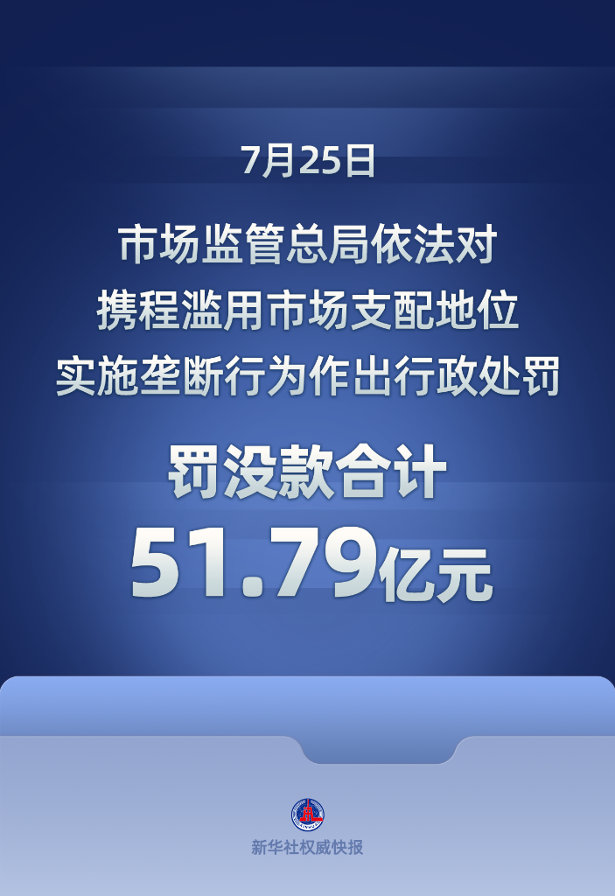
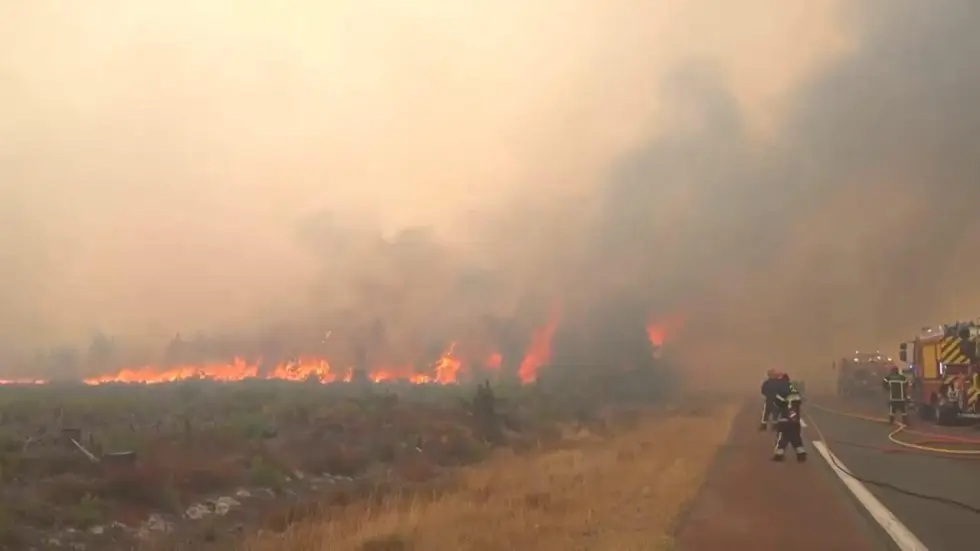
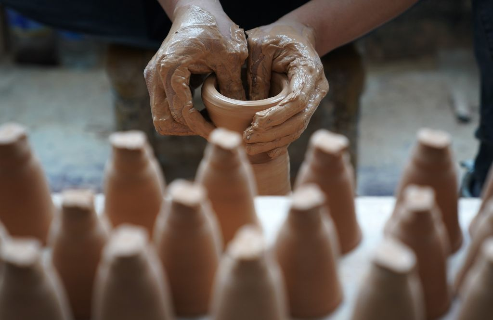
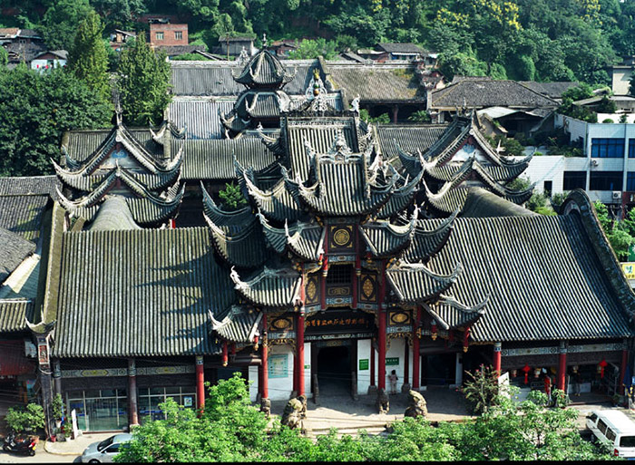
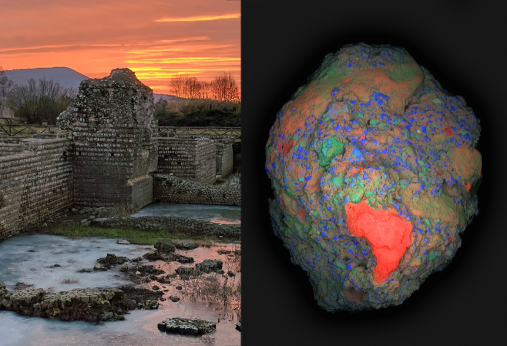
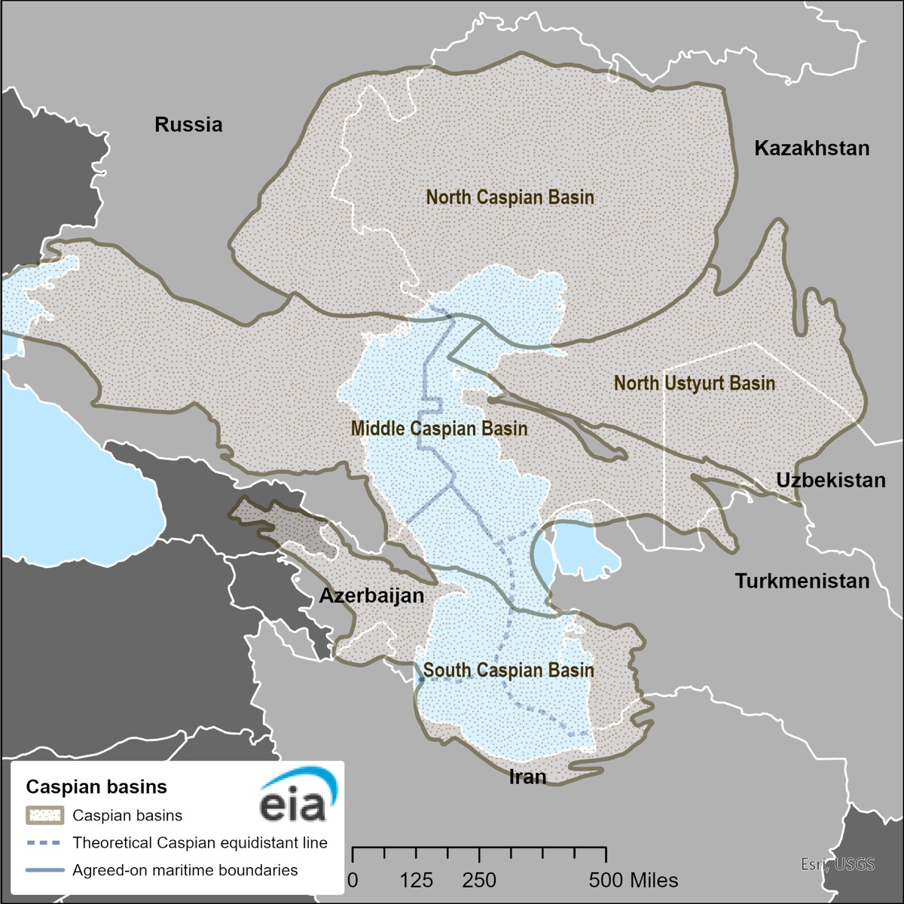

热点 01 · 国内 / 平台经济
携程被罚没51.79亿元：“全网最低价”为什么也可能妨碍竞争？
价格低当然对消费者有吸引力，但一个平台承诺“最低价”，和市场里真的有人能继续把价格压低，并不是同一件事。

市场监管总局7月25日对携程作出反垄断处罚。图：新华社权威快报
先说发生了什么
市场监管总局7月25日公布处罚决定：认定携程在中国境内在线酒店预订平台服务市场具有支配地位，并滥用这一地位实施独家合作和“全网最低价”。监管部门没收违法所得16.58亿元，罚款35.21亿元，两项合计51.79亿元；另要求退还被强制扣除的1.22亿元酒店订单储备金。
调查披露的做法不只是一句口号：部分酒店被要求独家合作；部分酒店必须给携程比其他渠道更低的价格；平台还会用算法工具调价，并以限制流量、下架或扣款等方式执行规则。
知识锚点
“市场支配地位”不等于违法，滥用才是
一家企业做得最大、用户最多，并不会自动触犯反垄断法。真正要问的是：它能否借这种力量，让交易对象接受在正常竞争中很难接受的条件，或者让竞争者失去进入和扩张的机会。
“全网最低价”在平台经济里常被称为最惠国条款或价格平价条款：商家不能在别的平台或自有渠道卖得更便宜。标准的平价已经有争议；本案披露的部分规则还要求酒店比其他渠道低20元或5%，约束更强。
值得拿出来聊的角度
“最低价”可能是一张静态截图，而竞争是一段动态过程
站在今天下单的消费者面前，平台能显示最低价，看起来当然是好事。可竞争真正有用的地方，是明天还有别的平台敢用更低佣金、更好服务或更便宜价格来抢用户。两者不能只看一张价格截图来判断。
如果占主导地位的平台可以自动跟价，又能惩罚酒店在别处降价，链条就会变成：酒店在新平台或官网让利，主平台要求同步甚至更低；新平台失去“便宜一点”来吸引用户的机会；用户继续集中在主平台；主平台的议价权又更强。表面上最低价还在，制造最低价的竞争过程却可能被削弱。
这也解释了反垄断为什么不只看“现在有没有涨价”。竞争受损还可能表现为酒店佣金压力、平台服务质量、商家自主定价权，以及新平台无法长大。消费者眼前省下的钱，未必足以抵消长期选择变少的成本。
不过边界也要讲清：平价条款并非任何时候都没有理由。酒店可能借大平台完成展示和比价，再引导用户去官网便宜下单，让平台承担获客成本却拿不到交易。问题的关键，是占主导的平台是否把平价、算法调价、流量惩罚和排他合作捆在一起，使防“搭便车”变成了封住其他渠道。
不同看法真正争的是什么
支持严格监管的人认为，酒店若没有跨平台定价的自由，新平台就难以靠价格和服务创新进入市场。另一种看法则担心，完全禁止合理的价格一致安排，会让平台不愿继续投入搜索、评价和售后体系。
所以最准确的讨论不是“低价好不好”，而是：谁有权定义低价、商家还能不能在别处试出另一种价格，以及挑战者是否还有一条能走通的路。
“全网最低价不一定等于竞争最充分；低价是一个结果，竞争是一套还能继续产生更好结果的过程。”
查看事实来源
国家市场监管总局：处罚事实、金额与行为方式
国家市场监管总局：平台最惠国条款与竞争影响解读
新华社：罚没51.79亿元及案件进展
热点 02 · 国际 / 灾害
法国、西班牙山火迫使25万多人撤离：火为什么会变成“景观级灾害”？
高温、干旱和风解释了火为什么容易失控；但一片土地如何生长、荒废和被建造，决定了火能不能一路烧过去。

消防员在法国西南部的火线旁作业。图：法国民防部门 / AP视频画面
先说发生了什么
过去几天，法国与西班牙多地山火在高温、干旱和强风中扩散。美联社7月25日汇总，两国已有超过25万人被疏散或撤离；法国西南部吉伦特省投入约1400名消防员，西班牙中部和西部也有大规模撤离。
法国内政部门公布，截至7月24日，法国今年已有约9.8万公顷土地被火烧过，并指出当地火险受到持续热浪、干旱和风力共同推动。具体起火原因仍需逐处调查，不能把每一场火都简单归为同一个原因。
知识锚点
火灾三角之外，还要看“荒野—城市交界带”
燃烧需要热源、可燃物和氧气，这是常说的“火灾三角”。天气会迅速改变其中两项：热和干旱降低植物含水量，风补充氧气并把火星送到更远处。
但撤离规模为何如此巨大，还与荒野—城市交界带有关：住宅、道路、营地和旅游设施越来越靠近林地。火不必烧进大城市，只要逼近这些交界区域，就会同时威胁大量居民、游客和交通线路。
值得拿出来聊的角度
灭火能力是当天的新闻，燃料格局才是火灾的“资产负债表”
飞机和消防员决定眼前能否守住火线；但火场在点燃之前，已经积累了很多年的条件。欧洲环境署总结的风险包括农村人口流失后土地弃管、灌木和枯落物增多、同龄或单一树种形成连续燃料，以及住宅向林地边缘扩张。
这里有一个不太直觉的矛盾：每次都尽可能把小火迅速扑灭，短期当然保护了人和财产；如果长期连生态系统中低强度的火也全部排除，部分地区的可燃物会越积越多。等到极端高温和大风同时出现，剩下的火反而更难控制。这被称为“灭火悖论”。
这不等于“山火就应该随便烧”。人口密集区必须灭火，很多火也确实由人为疏忽或纵火引起。更合理的意思是：防火不能只等着冒烟后出动飞机，还要在平时用放牧、清除灌木、计划烧除、恢复混合林等方式，切断一烧就连成片的燃料。
因此，评价一个地方的山火治理，不能只问今年买了多少架飞机，还要问：谁在维护离村庄最近的那片土地，维护成本由谁承担，允许哪一种低风险的扰动存在。
为什么这个角度也有争议
主张主动管理的人认为，适度清理和计划烧除能减少连续燃料；反对者担心操作失控、烟尘影响和对生态的干扰。并且，不同森林的自然火周期不同，不能把一套方法机械复制到所有地区。
对这次法国、西班牙山火，最稳妥的说法是：极端天气放大了危险，而土地管理与城市扩张影响损失会有多大；不能在调查完成前，把某个长期机制硬说成某一起火点的直接原因。
“真正难的不是把每一场火都扑灭，而是别让一整片景观只剩下‘一烧就连成片’这一种状态。”
查看事实来源
AP：法国、西班牙山火与撤离规模
法国内政部：火情、过火面积与救援力量
欧洲环境署：燃料格局、土地弃管与火灾韧性
美国林务局研究：长期全面压制低强度火的风险边界
热点 03 · 文化 / 世界遗产
景德镇手工瓷业遗存申遗成功：世界遗产这次认的不是一只漂亮瓷瓶
被列入名录的是一套从瓷土、柴窑、码头到作坊和分工的生产网络——换句话说，是一座城市如何连续做了近千年的瓷。

2024年8月，工匠在景德镇一间制瓷作坊里拉坯。图：新华社记者 万象
先说发生了什么
7月25日，在韩国釜山举行的第48届世界遗产大会通过决议，将“景德镇手工瓷业遗存”列入《世界遗产名录》。至此，中国世界遗产总数增至61项。
这是一项系列遗产，由5处组成部分、15组共45处遗产点构成，覆盖10至19世纪手工瓷业体系的重要证据，包括御窑厂、瓷土矿、窑址、作坊群、码头和运输通道等。
知识锚点
“系列遗产”保护的是一个关系网
有些世界遗产不是一栋建筑或一处遗址，而是由空间上分散、意义上互相依赖的多个部分共同证明一种价值。景德镇就是这样：高岭土和瓷石提供原料，山林供应燃料，昌江和码头负责运输，窑炉、作坊和工匠完成高度细分的工序。
联合国教科文组织的评审材料特别关注这套系统如何形成标准化与专业化分工，以及钴料等外来原料、海外订单和审美如何进入本地生产。它不是封闭的“传统工艺孤岛”，而是很早就接入全球贸易的制造业集群。
值得拿出来聊的角度
保护一件古物容易定义，保护一套还活着的生产系统更难
瓷器进博物馆后，温湿度、光照和修复都有清晰标准；一座生产型城市却不能被罩进玻璃柜。作坊要接订单，工匠要谋生，居民要改善住房，老窑址还会成为游客打卡点。它的价值恰恰来自“活着”，而活着就意味着一定会变化。
旅游和文创能给保护带来资金，也可能把真正的生产空间挤成零售街和表演场：游客看见拉坯，却看不见选料、配釉、烧窑、次品淘汰和长期学徒制；城市保留了“像瓷都的样子”，却把瓷业最关键的知识链搬走了。
所以这项申遗更值得追问的，不是以后会多卖多少门票，而是哪些生产条件也应被当作遗产：工匠能否负担作坊租金，传统原料和窑炉是否还能使用，年轻人有没有足够长的学习周期，真实生产与为游客复刻如何区分。
最好的保护不该把景德镇冻成一套“古代工厂布景”。它需要同时保留物证、技艺和继续试错的空间。因为手工业传统若只允许重复古样，不允许当代人做出新的东西，保存下来的可能只是姿势，而不是能力。
活态传承的两难
强调原真性的人担心商业化稀释历史证据；强调发展的当地人则会问，如果生产和生活都被严格限制，谁还愿意留下来做瓷？两边都没有简单答案。
系列遗产提供的一种思路，是给不同节点不同保护强度：窑址和矿址保留证据，作坊和社区保留使用，新增商业与游客流量再被引导，而不是把整座城市都按同一种“禁止改变”来管理。
“景德镇这次申遗成功的不是一只瓷瓶，而是让一只瓷瓶能够被连续做出来近千年的整套系统。”
查看事实来源
中国联合国教科文组织全国委员会：列入世界遗产名录
新华社：5处组成部分、45处遗产点等信息
联合国教科文组织：景德镇手工瓷业遗存项目页
世界遗产委员会评审文件：完整工业体系与突出价值
图片来源：新华社景德镇图集
涉猎 01 · 制度史 / 财政
一张“盐引”，怎么同时解决边防粮草和国家财政？
古代政府没有现代税务网络，却抓住了人人都要吃、产地又相对集中的盐，把一种生活必需品变成了财政工具。

自贡盐业历史博物馆所在的西秦会馆，由清代陕西盐商集资修建。图：自贡世界地质公园
故事背景
盐适合被国家控制，有三个朴素原因：几乎人人需要，需求相对稳定；盐场和盐井比千家万户的收入更容易监管；盐又便于储存和运输。中国历代盐政并不相同，但盐专卖与盐税长期是重要财政来源。
明代早期的“开中法”尤其有意思。商人把粮食运到北方边镇，政府不一定立刻付现银，而是给他一张盐引；凭盐引，商人可以到指定盐场支取盐，再到规定地区销售。粮草、行政许可和商业利润，被一张凭证串在了一起。
它到底像什么
盐引既像许可证，也像政府用未来收入开的“欠条”
商人先替国家完成昂贵的边疆运输，之后才用盐业特许权收回成本和利润。学者因此把明代盐引称为一种公共债务工具：政府用未来可兑现的垄断收益，换取今天急需的粮草。
它还把国家做不好的物流外包给市场。官府不必自己组织每一辆车和每一支驼队，只要设计兑换比例、盐场和销售区域，商人便会寻找较便宜的路线和供给方式。
值得拿出来聊的角度
它高明的地方，也是它后来容易出问题的地方
盐引把原本看不见的行政权力做成了一项有价格的商业资格。资格一旦能带来稳定利润，就会出现等待兑现、转手交易、囤积投机和权贵争夺。国家本想借商人解决物流，最后可能先要解决“谁有资格当盐商”。
更深一层看，盐专卖是一种藏在必需品价格里的税。它征收方便，却不按贫富区分：收入低的人吃盐不会同比例少很多，因此负担相对更重；官盐价格过高，又会给私盐留下利润空间，逼国家投入更多缉私成本。
盐引最值得记住的，不是“古代有一种票”，而是财政工具常把不同时间和不同能力拼在一起：国家今天缺粮，商人今天有运输能力，未来的盐利负责付款。现代政府采购、特许经营和应收账款融资里，仍能看到这种把未来现金流换成当下能力的思路。
当然，不能把两千年盐政说成一套固定制度。汉、唐、宋、明、清的生产、运输和招商方式多次变化；“盐引像公债”主要适合解释特定时期的粮盐交换机制。
“明代盐引不只是一张卖盐许可证，它还是国家用未来的盐业利润，向商人购买今天的边防物流。”
查看延伸来源
《明代盐引：一种公共债务制度？》：开中法与盐引机制
《中国史学刊》：边镇粮运与盐引兑换
自贡世界地质公园：盐业历史博物馆与图片
涉猎 02 · 建筑 / 材料
罗马混凝土会“自愈”？真相比一句古人技术失传更有意思
古罗马材料并非一种神奇配方。火山灰、石灰处理方式、海水环境和建筑用途不同，会形成不同的耐久机制。

意大利古罗马城墙遗址与混凝土样本的元素成像。图：MIT / Linda Seymour 等
故事背景
罗马人把石灰、骨料和火山灰等材料混合，做出能在水中硬化的混凝土。万神殿无钢筋穹顶、古港口和水利设施存留至今，让这种材料经常被说成“比现代混凝土更强”。
但现代研究看到的是多种机制，而不是一个万能秘方：火山灰与石灰发生长期反应，海工混凝土在海水中可能长出有利矿物；另一些样本中的白色石灰颗粒，则可能来自高温“热拌”。
裂缝怎么可能自己补上
被当成“搅拌不匀”的白色颗粒，也许正是修补材料
MIT团队对古罗马混凝土样本分析后提出，高温混合留下的活性石灰团块，在裂缝遇水时会溶出钙；钙随后在裂缝中沉淀并重新结晶，帮助堵住细小通道。实验仿制材料的裂缝进水后，也比不含这类团块的对照样本更快停止渗流。
有意思的是，这些白色团块过去常被解释为古人施工粗糙。研究换了一个问题：如果它们在不同建筑中反复出现，会不会不是缺陷，而是一种有功能的材料异质性？
值得拿出来聊的角度
现代工程追求“均匀”，古材料的优势可能恰在“不均匀”
工业材料喜欢成分稳定、强度可预测，因为摩天楼、桥梁和钢筋结构必须按统一标准计算。罗马混凝土里的团块、孔隙和多相反应，看起来不够整齐，却可能给材料留下了遇水继续反应的余地。
这不是说古代技术全面胜过现代技术。现代混凝土早期强度高、生产快、可以配合钢筋承担复杂荷载；罗马建筑往往墙体厚、施工慢，结构需求也不同。“活了两千年”是耐久性的证据，不是所有性能的总冠军奖杯。
真正值得借鉴的，是把评价指标从“28天强度”拉长到整个寿命：材料能否限制裂缝扩张、维修几次、生产多少碳排、报废后如何处理。古配方的价值不是复古，而是让现代工程重新决定究竟要优化哪个时间尺度。
“罗马混凝土最有意思的不是古人有秘方，而是我们以为的杂质，可能恰好给材料留下了自我修补的空间。”
查看延伸来源
MIT：热拌、石灰团块与裂缝自愈研究
MIT材料系：庞贝遗址带来的新证据与边界
AP：罗马混凝土研究与现代应用
涉猎 03 · 地理 / 国际法
里海到底是海还是湖？五个国家争的从来不只是名字
同一片水域，如果按“海”或“湖”的规则分，油气、渔业、管道和军事活动的边界都可能不同。

里海沿岸五国与盆地、已商定海上边界。图：美国能源信息署 / Esri / USGS
故事背景
里海没有天然水道直接连接世界大洋，按地理学通常被称为世界最大的内陆水体或湖泊；名字里却一直有“海”。苏联解体后，原本主要由苏联和伊朗面对的水域，一下变成俄罗斯、哈萨克斯坦、土库曼斯坦、伊朗和阿塞拜疆五国共同面对。
问题随即变得具体：海底油气田属于谁？鲟鱼在哪一段捕？跨海管道需不需要五国一致同意？域外军舰能不能进入？如果只争“它究竟叫什么”，就错过了真正的利益。
2018年的解决办法
不给它硬套一种身份，而是做一套“混合规则”
五国谈判22年后，在2018年签署《里海法律地位公约》。各国可设不超过15海里的领水，外接10海里专属捕鱼区；其余水面保留共同使用的性质。海床和底土则由相邻国家通过协议划分扇区。
公约还规定，只有里海沿岸五国可以在这里部署武装力量。铺设海底管道原则上由管道经过的海床所属国家同意，同时必须遵守环境规则。它既不像典型公海，也不像一只由岸线平均切开的普通湖泊。
值得拿出来聊的角度
法律分类不是给自然贴标签，而是给利益选择一套算法
如果完全按海洋法思路处理，会出现领海、专属经济区和大陆架；如果按共享湖泊思路处理，又可能强调共同开发或按比例分割。岸线长短、资源位置不同，每个国家偏好的“自然定义”也会不同。
里海最后采用混合制度，说明国际法有时不是先找到唯一正确的类别，再机械执行；而是当现成类别都会制造难以接受的输家时，参与者为这一个地方造出量身定制的规则包。
更值得注意的是，表面上最哲学的问题——“海还是湖”——其实可以翻译成四张表：水面怎么走船、鱼怎么分、海床油气归谁、军队能不能来。把名词争论拆成具体权利，才看得见谈判为什么拖了22年。
公约也没有一次解决所有边界。海床扇区仍需有关邻国另行谈判，环境执行和管道项目也会继续产生分歧。国际协议常常不是把争议清零，而是先规定以后应该用什么方式继续争。
“里海是海还是湖，真正决定的不是地理课答案，而是油气、渔业、管道和军舰分别按哪套规则走。”
查看延伸来源
哈萨克斯坦外交部：2018年公约与领水、捕鱼区规则
《里海法律地位公约》英文全文
联合国：公约签署及22年谈判
美国能源信息署：里海油气、边界与地图
“我们所见与我们所知之间的关系，从来不是尘埃落定的。”
约翰·伯格在《观看之道》开篇讨论“看见”并不等于被动接收。我们知道地球在转，却仍然看见太阳落下；知识会改写观看，眼前的景象也会不断顶撞解释。它适合提醒自己：事实重要，但我们选择把什么当成事实的一部分，同样值得检查。
约翰·伯格，《观看之道》
“世界之所以一点点变好，部分要归功于那些没有被历史记下的行动。”
乔治·艾略特在《米德尔马契》结尾把目光从英雄移向普通人的隐秘生活。它不是夸“平凡最伟大”，而是指出社会秩序有大量成果无法准确署名：照料、守信、克制和不被看见的责任，常常只在没有发生的坏事里留下痕迹。
乔治·艾略特，《米德尔马契》
“发展可以被看作一个扩展人们真实享有之自由的过程。”
阿马蒂亚·森在《以自由看待发展》中反对只用收入和GDP判断进步。钱是重要手段，却不是最终能力：同样收入的人，可能因为教育、健康、性别、公共服务或政治处境不同，拥有完全不同的选择。衡量发展，得看人实际上能做什么、能成为什么。
阿马蒂亚·森，《以自由看待发展》
“在自然界，没有什么是孤立存在的。”
蕾切尔·卡森在《寂静的春天》中讨论农药时写下这句话。杀虫剂并不会只停在目标昆虫身上，它会沿土壤、水、食物链和繁殖过程移动。句子短，是因为生态学最难接受的事实也很短：每一次局部控制，都可能在系统别处产生回声。
蕾切尔·卡森，《寂静的春天》
“在制造把能量向外施加的工具之前，我们先制造了把能量带回家的工具。”
厄休拉·勒古恩在《小说的提袋理论》中反问：人类最早的重要工具为什么一定是长矛，而不能是装种子、食物和婴儿的容器？前一种叙事偏爱英雄、冲突和征服，后一种则让收集、保存、照料和延续重新进入文明故事。
厄休拉·勒古恩，《小说的提袋理论》